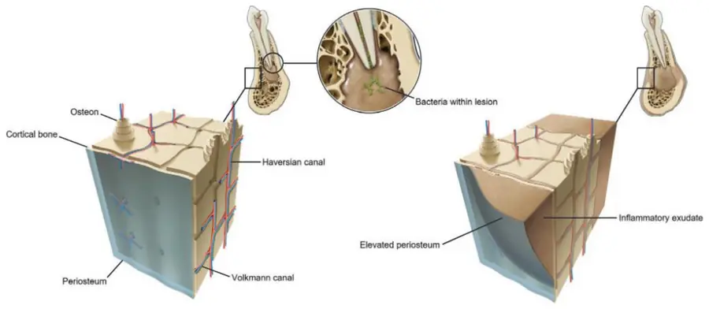
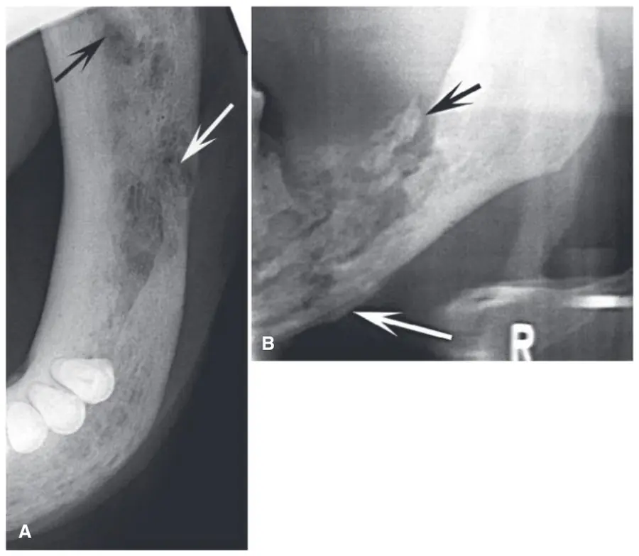

نسخه استخراجشده؛ ترجمه یا تأیید علمی انجام نشده است. وضعیت: captured
نقطهی شروع یک واقعیت بالینی است: «التهاب شایعترین وضعیت پاتولوژیک است که در فکها پدید میآید.»

و دلیلش، ویژگی منحصربهفرد فک است: «برخلاف سایر استخوانهای اسکلت، فکها از این نظر بیهمتایند که دندانها یک مسیر مستقیم برای عوامل یا فرایندها میسازند — چه میکروارگانیسمهای بیماریزای دهانی و چه عوامل شیمیایی یا فیزیکی — تا وارد استخوان شوند.»
و تعادلی که به هم میخورد: «در شرایط نرمال، متابولیسم استخوان تعادل بسیار پیچیدهای از تولید استخوان توسط استئوبلاست و تحلیل استخوان توسط استئوکلاست است.» چهار عامل این تعادل را به یک سو میبرند: «بیماریزایی میکروارگانیسمهای باکتریایی، پاسخ ایمنی میزبان، عروقرسانی بافت، و زمان».
و یک قرارداد مفهومی مهم: «در این ماژول، همهی وضعیتهای التهابی استخوان، صرفنظر از علت اختصاصیشان، بخشی از یک طیف از وضعیتها با تظاهرات بالینی و ظاهرهای رادیولوژیک متفاوت در نظر گرفته میشوند.» یعنی مرز میان این تشخیصها پیوسته است نه گسسته.
چهار نام بر پایهی محل انتشار:
حالا دو واژهی کلیدی که در سراسر این ماژول به کارت میآیند:
و دو اصطلاحی که باید کنار گذاشت: «در گذشته اصطلاحات «استئیت اسکلروزان کانونی» و «استئیت کندنسینگ» هر دو مترادف برای اسکلروزینگ استئیت به کار میرفتند، ولی استفاده از آنها باید ترک شود.» چرا؟ «هرچند پاسخ اسکلروتیک استخوان میتواند کانونی باشد، در التهاب این پاسخ تقریباً همیشه منتشرتر و گستردهتر است.» و «اسکلروز» اصطلاح ترجیحی است چون در همهی رشتههای رادیولوژی برای افزایش دانسیتهی ماتریکس استخوان به کار میرود.
زنجیرهی رویدادها را کامل دنبال کن؛ هر حلقهاش یک ویژگی رادیوگرافیک میسازد.

۱) شروع. «متابولیتهای برخاسته از پالپ نکروز از آپکس ریشه خارج میشوند و پاسخ التهابی را در فضای لیگامان پریودنتال و استخوان اطراف برمیانگیزند.»
و بافتشناسیاش زمان را نشان میدهد: «انفیلترای التهابی متشکل از نوتروفیلها در مراحل حادتر، و مونوسیت/ماکروفاژ و لنفوسیت در مراحل مزمنتر.»
۲) سه مسیر ممکن. «بسته به شدت پاسخ میزبان، بافت ممکن است نکروز شود و چرک تشکیل گردد که به آبسه میانجامد» — این توالی «اغلب پاسخ التهابی حاد در نظر گرفته میشود». گرانولوما وقتی شکل میگیرد که «بدن میکوشد پاسخ التهابی را از بافتهای نرمال مجاور جدا و حذف کند» با انفیلترایی عمدتاً از لنفوسیت، پلاسماسل و هیستیوسیت.
و کیست چگونه ساخته میشود؟ «اپیتلیوم گیرافتاده از بقایای سلولی اپیتلیالی مالاسه ممکن است در این شرایط تحریک به تکثیر شود و پوششی درون ناحیهی تحلیل استخوان آپیکال بسازد و کیست را پدید آورد.»
۳) پاسخ جبرانی استخوان. «اگر استخوان و مغز استخوان اطراف بیشتر درگیر شوند، پاسخ جبرانی استخوان ممکن است جدا کردن پاسخ التهابی با رسوب استخوان در محیط ناحیهی تحلیل باشد؛ این همان فرایند اسکلروز است.»
۴) رسیدن به سطح استخوان و پریوست. پریوست «لایهای متراکم و نامنظمضخیم از بافت نرم است که کف حفرههای هوایی را میپوشاند و سطح استخوانها را میپوشاند». الیاف شارپی — امتدادهای کلاژنی از استخوان — آن را به سطح لنگر میاندازند.
و دو لایهی پریوست را با هم حفظ کن، چون کل رفتار استخوانسازی از آن میآید: «یک لایهی درونی استئوژنیک که سلولهای بنیادی مزانشیمی را در خود دارد، و یک لایهی بیرونی بافت همبند که فیبروبلاست و کلاژن دارد.» و «وقتی تحریک شوند، سلولهای بنیادی لایهی استئوژنیک میتوانند به استئوبلاست تمایز یابند و این سلولها استخوان میسازند».
نتیجه: استخوانسازی نو پریوستئال. «با حرکت پاسخ التهابی از راه کانالهای هاورس و ولکمان به سطح استخوان، پاسخ ممکن است پریوست چسبیده را بلند و بهطور گسترده متسع کند، و همزمان سلولهای بنیادی لایهی استئوژنیک را به تمایز به استئوبلاست تحریک کند.» ولی «چون الیاف شارپی پریوست را به سطح استخوان میچسبانند، میزان اتساع محدود میشود».
۵) و سرانجام، سکستروم. «در درون استخوان، اگر رسوب استخوان روی ترابکولهای بومی گسترده شود (یعنی اسکلروز)، فضاهای مغز حاوی کانالهای عروقی کوچک ممکن است کوچکتر شوند و عملاً از رسیدن خون و مواد غذایی جلوگیری کنند. اگر خونرسانی موضعی مختل شود، استخوان ممکن است نکروز شود و به استخوان در حال مرگ یا مردهای به نام سکستروم (جمع: سکسترا) بینجامد.»
و یک هشدار بالینی که همینجا باید بشنوی: «مهم است که دندانپزشک بداند تظاهر بالینی بیماری التهابی پریاپیکال لزوماً با یافتههای تصویری همبستگی ندارد.» و «اغلب، التهاب پریاپیکال ممکن است از ابتدا به شکل مزمن پدید آید، و در این حالت میتواند کاملاً بیعلامت باشد».
نوع سؤال: ساخت کلمه · 10 خانه
حروف منبع: ی · ک · ن · پ · ت · و · و · ی · ر · ر
نوع سؤال: ساخت کلمه · 5 خانه
حروف منبع: ش · ی · ا · ر · پ